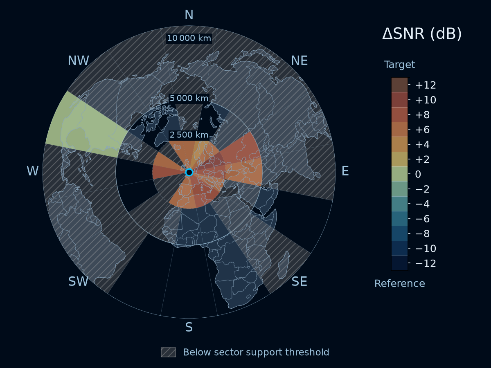
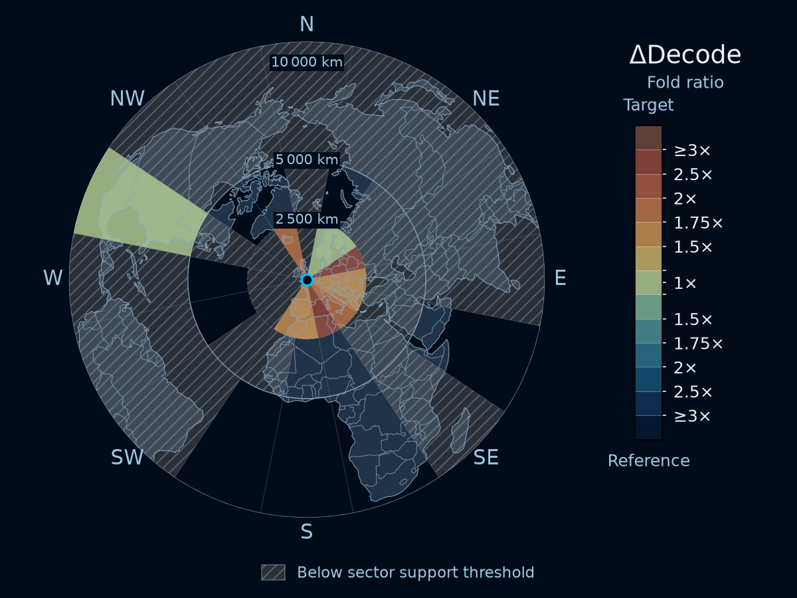
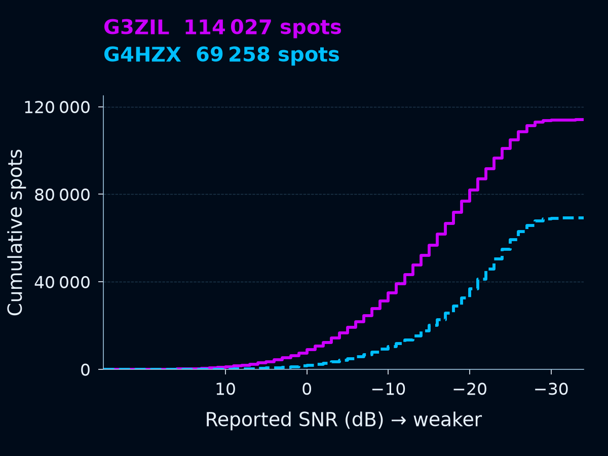
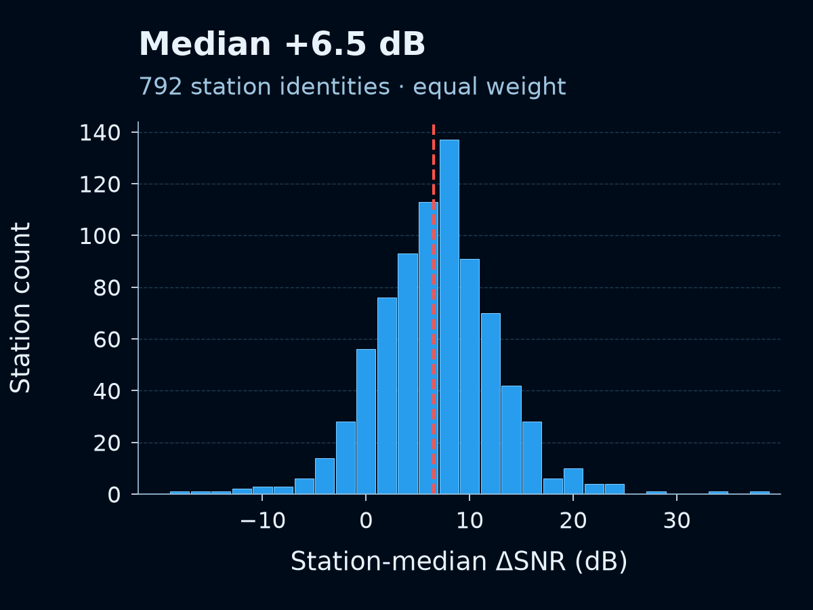
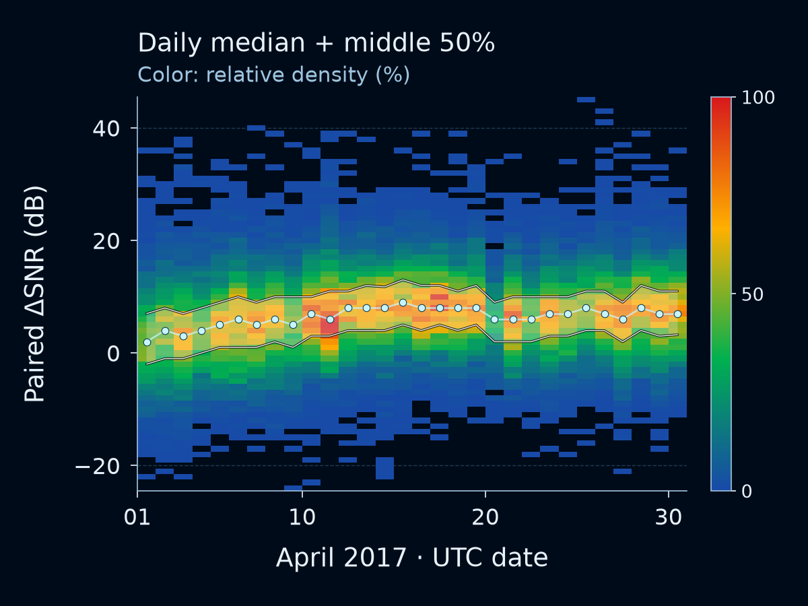
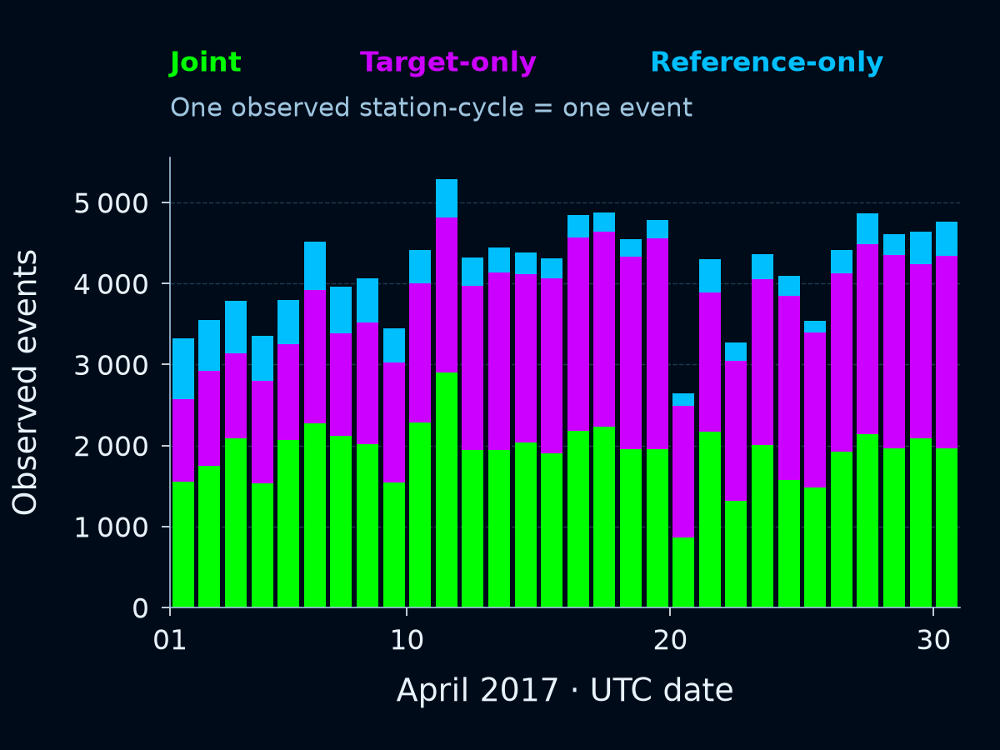

Click a preview to inspect the unchanged full-resolution figure with the existing walkthrough viewer.
Where is SNR higher?
Signal quality · ΔSNR (dB)

Data-derived preview · click for the full original figureWhere are more signals decoded?
Decoding advantage · fold ratio

Data-derived preview · click for the full original figureHow does reach differ?
Raw reported SNR · cumulative spots

Data-derived preview · click for the full original figureHow much?
Distribution of station medians

Data-derived preview · click for the full original figureWhen?
Daily paired ΔSNR · April 2017

Data-derived preview · click for the full original figureWho?
Daily observed station-cycles

Data-derived preview · click for the full original figure